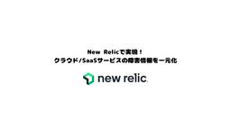
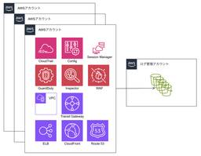
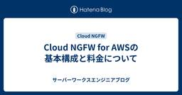
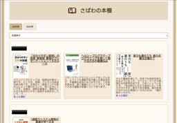
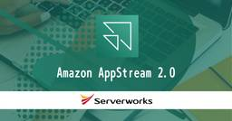
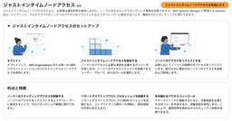
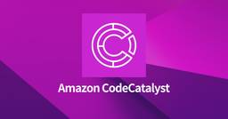

サーバーワークスエンジニアブログ
https://blog.serverworks.co.jp/
クラウド専業インテグレーター・サーバーワークスの中の人があらゆる技術についてお届けします。
フィード

【New Relic】New Relicで実現！ クラウド/SaaSサービスの 障害情報を一元管理
サーバーワークスエンジニアブログ
New Relicの『Status Pages』機能を使って、クラウド環境やSaaSサービスのインシデント管理を効率化。設定手順も解説。
1日前

Cline利用規約の適用範囲が明確に - 外部API利用時は適用外であることが公式回答で判明 68
68
サーバーワークスエンジニアブログ
先日公開したブログ記事「Cline利用におけるデータの取り扱いについて」には、多くの皆様から反響をいただきました。誠にありがとうございます。 blog.serverworks.co.jp icoxfog417（GitHubアカウント名）様がCline社に対して直接、ライセンスと利用規約の明確化を求める問い合わせを行っておりました。 github.com GitHub IssueでのCline社からの回答により、特に外部APIを利用する際のClineの利用規約の適用範囲について、重要な確認が取れましたので、本記事で詳しくお伝えします。 今回明らかになった重要なポイント 結論からお伝えすると、以下…
2日前

【AWSサービス別】 S3へのログ集約時のバケットポリシーについて
サーバーワークスエンジニアブログ
こんにちは。AWS CLIが好きな福島です。 はじめに マルチアカウントが主流である昨今、監査や分析を目的にログをS3に集約することが多いかと存じます。 単一のAWSアカウントから各種AWSサービスのログをS3に出力する際のバケットポリシーについては、AWSのドキュメントに記載がありますが、 複数のAWSアカウントからログを集約する際のバケットポリシーは、アレンジが必要な場合が多いです。 そのため今回は、複数のAWSアカウントから各種AWSサービスのログをS3に集約する際のバケットポリシーについて、まとめてみました。 はじめに 前提 ガバナンス系 CloudTrail Config 補足：Co…
2日前

Cloud NGFW for AWSの基本構成と料金について
サーバーワークスエンジニアブログ
パロアルトネットワークスのフルマネージド次世代ファイアウォールサービスであるCloud NGFW for AWSの導入、コスト構造、高度なセキュリティ機能についてご紹介します。
3日前

社内向けおすすめ本紹介プラットフォーム「さばわの本棚」を支える技術 2
サーバーワークスエンジニアブログ
サービス開発部のくればやしです。 今回、社内向けおすすめ本紹介プラットフォーム「さばわの本棚」の運用をはじめたので、それらの背景と採用技術について紹介します。 背景など 社員同士でおすすめ本の紹介をすることはよくありますよね。これまで多くの場合はSlackや各種MTG等で個別に紹介されることが多かったのですが、それらだと流れていってしまうので、どこかに情報をまとめておきたいなと思っていました。 社内で既に様々な用途で利用しているWiki的なサービスもあるのですが、おすすめ本の情報を整理しておくには物足りないなと感じていました。（個人的に本は表紙（装丁）も含めてコンテンツだと思うのですが、それら…
3日前

AppStream 2.0 で IAM Identity Center を SAML 2.0 IdPとして利用する 〜 (4) フェデレーションまわりの設定
サーバーワークスエンジニアブログ
はじめに こんにちは、ドウミョウ と申します。 AppStream 2.0 の認証先として、IAM Identity Center を利用する検証を行ってみました。 何回かに分けて、実構築の模様をお届けします。 １）はじめに ２）Amazon AppStream 2.0 の基本環境構築 ３）AWS IAM Identity Center の基本環境構築（有効化、基本設定、ユーザ登録） ４）フェデレーションまわりの設定 細かいチューニングは別途で行う前提で、 基本的な環境を構築し、フェデレーション設定を終わらせることをゴールとします。 本ポストでは 本ポストでは、実際に IAM Identity…
4日前
AppStream 2.0 で IAM Identity Center を SAML 2.0 IdPとして利用する 〜 (3) IAM Identity Center の基本環境構築
サーバーワークスエンジニアブログ
はじめに こんにちは、ドウミョウ と申します。 AppStream 2.0 の認証先として、IAM Identity Center を利用する検証を行ってみました。 何回かに分けて、実構築の模様をお届けします。 １）はじめに ２）Amazon AppStream 2.0 の基本環境構築 ３）AWS IAM Identity Center の基本環境構築（有効化、基本設定、ユーザ登録） ４）フェデレーションまわりの設定 細かいチューニングは別途で行う前提で、 基本的な環境を構築し、フェデレーション設定を終わらせることをゴールとします。 本ポストでは 本ポストでは、IAM Identity Cen…
4日前
AppStream 2.0 で IAM Identity Center を SAML 2.0 IdPとして利用する 〜 (2) AppStreamの基本環境構築
サーバーワークスエンジニアブログ
はじめに こんにちは、ドウミョウ と申します。 AppStream 2.0 の認証先として、IAM Identity Center を利用する検証を行ってみました。 何回かに分けて、実構築の模様をお届けします。 １）はじめに ２）Amazon AppStream 2.0 の基本環境構築 ３）AWS IAM Identity Center の基本環境構築（有効化、基本設定、ユーザ登録） ４）フェデレーションまわりの設定 細かいチューニングは別途で行う前提で、 基本的な環境を構築し、フェデレーション設定を終わらせることをゴールとします。 本ポストでは 本ポストでは、AppStream 2.0 の基…
4日前
AppStream 2.0 で IAM Identity Center を SAML 2.0 IdPとして利用する (1) はじめに
サーバーワークスエンジニアブログ
はじめに こんにちは、ドウミョウ と申します。 AppStream 2.0 の認証先として、IAM Identity Center を利用する検証を行ってみました。 何回かに分けて、実構築の模様をお届けします。 １）はじめに ２）Amazon AppStream 2.0 の基本環境構築 ３）AWS IAM Identity Center の基本環境構築（有効化、基本設定、ユーザ登録） ４）フェデレーションまわりの設定 細かいチューニングは別途で行う前提で、 基本的な環境を構築し、フェデレーション設定を終わらせることをゴールとします。 本ポストでは 本ポストでは、環境構築にあたっての前提条件や、…
4日前

【AWS Systems Manager の新しいエクスペリエンス】(2) ジャストインタイムノードアクセス (JITNA) を試す (1)
サーバーワークスエンジニアブログ
こんにちは、AWS サポート課（旧テクニカルサポート課）の坂本（@t_sakam）です。今回も、前回に続いて AWS Systems Manager (SSM) の新しいエクスペリエンス（= 統合コンソール）についてのブログです。 はじめに 前回のブログのあと、2025/4/29 に新しいエクスペリエンスを有効化した環境で利用が可能な「ジャストインタイムノードアクセス (Just-in-Time Node Access / JITNA)」という要注目の機能が発表されました。そのため、AWS Systems Manager の新しいエクスペリエンスシリーズ第 2 回の今回は、予定を変更し「ジャス…
5日前
Cline利用におけるデータの取り扱いについて 351
サーバーワークスエンジニアブログ
【2025年5月16日追記】 利用規約について、Cline社からの回答により適用範囲が明確となりました。 以下の記事も合わせてご覧ください。 blog.serverworks.co.jp 【2025年5月16日追記ここまで】 これまでClineに関するブログ記事をいくつか公開し紹介してきました。 今回、利用規約の変更に伴うユーザーデータの取り扱いについて懸念が生じたため、本記事ではClineの利用規約の中でも特に注意すべき点と、弊社の対応についてご説明します。 Cline利用規約の変更点とデータ収集のリスク Clineの利用規約 (https://cline.bot/tos 更新日: 2025…
5日前

Amazon CodeCatalystが提供するGitHub Actionsのランタイム環境の注意点
サーバーワークスエンジニアブログ
こんにちは。 アプリケーションサービス部、DevOps担当の兼安です。 今回はAmazon CodeCatalystで、GitHub Actionsのワークフローを動かす際、ランタイム環境に注意が必要なことをお話しします。 本記事のターゲット Amazon CodeCatalystとは GitHub Actionsで書いたワークフローをAmazon CodeCatalystで実行する方法 CodeCatalystによるGitHub Actionsの動かし方 ワークフローの作成と、GitHub Actions by AWSの配置 CodeCatalystのワークフローのYAMLファイルにGitH…
5日前
Amazon FSx for NetApp ONTAPの概要をざっくりまとめてみた
サーバーワークスエンジニアブログ
はじめに そもそもNetApp ONTAPとは Amazon FSx for NetApp ONTAPの全体像 ファイルシステム SVM ボリューム プライマリストレージ（SSD層） 容量プールストレージ（HDD層：キャパシティプールストレージともいう） 特徴 幅広い接続性 豊富な運用管理手段 ストレージの階層化 他ストレージサービスとの比較 料金について プロビジョンド料金項目 従量料金項目 共通料金項目（オプション） おわりに はじめに こんにちは。SA課の阿部です。 配属されてからは、オンプレのファイルサーバーをAWSに移行する案件を中心に携わっています。 今回、初めてAmazon FS…
6日前
GitLabランナーについてまとめてみた
サーバーワークスエンジニアブログ
はじめに GitLabの種類について SaaS Gitlab.com（共有版） GitLab Dedicated（顧客専用版） Self-Managed（自己管理版） GitLab Runnerとは何か？ ランナーの種類 GitLab-hosted runners Self-managed runners Executorについて Self-managed runnersのExecuterについて GitLab-hosted runnersのExecuterについて さいごに はじめに こんにちは！サーバーワークス橋本です。 5月に入り、爽やかな暑さを感じるまでになってきました。 梅雨に入ると…
6日前

RBACとABACによるアクセス制御を理解する
サーバーワークスエンジニアブログ
アクセス制御の分野で主要なアプローチとして知られているのがロールベースのアクセス制御（RBAC）と属性ベースのアクセス制御（ABAC）です。 皆さんこんにちは、手嶋です。 RBACとABAC、どちらもよく聞くけれど、具体的に何が違って、自社のシステムにはどちらが合うんだろう？そんな疑問をお持ちではありませんか。 本ブログでは、アクセス制御の二大巨頭とも言えるロールベースのアクセス制御（RBAC）と属性ベースのアクセス制御（ABAC）を徹底比較します。 この記事を最後まで読めば、それぞれの特徴が明確になり、あなたの組織に最適なアクセス制御モデルを選択するための具体的なヒントが得られるはずです。一…
8日前
Keycloakを学ぶ②用語編
サーバーワークスエンジニアブログ
こんにちはアプリケーションサービス本部の上田です。 GWはいかがお過ごしでしたでしょうか？ 私はどこ行っても混むだろうなと思ってGW中に家の大掃除をしたり積みゲーを崩したりインドアに過ごしていました。 今回は前回導入したKeycloak使う前に、用語の整理をしておこうと思います。 ちなみに前回の記事はこちら blog.serverworks.co.jp Realm（レルム） User（ユーザー） Role（ロール） Group（グループ） Client（クライアント） Protocol Mapper（プロトコルマッパー） Client Scope（クライアントスコープ） まとめ Realm（レ…
8日前
既存のReactアプリに、Amazon Cognitoで認証を組み込んでみよう
サーバーワークスエンジニアブログ
こんにちは。 アプリケーションサービス部、DevOps担当の兼安です。 今回はReactを用いたSPA（Single Page Application）に、Amazon Cognitoで認証を組み込む方法を説明します。 本記事のターゲット 今回の構成 Amazon Cognitoのアプリケーションクライアント ReactアプリにAWS Amplify UIを使用して認証を組みこむ 設定ファイルの準備 Amplify UIのAuthenticatorコンポーネント URLパスで認証の要否を制御する 認証済みかどうかの判定 HTTPリクエストに認証情報を付与する Amazon API Gatewa…
9日前
AWS WAF 適用環境におけるペネトレーションテストの目的と対応方法を整理する
サーバーワークスエンジニアブログ
マネージドサービス部 佐竹です。本ブログでは「AWS WAF 適用環境におけるペネトレーションテストの目的2つと、それに応じた対応方法5つを整理して記載しました。また、WafCharm を利用している場合の考慮事項についても合わせて述べ、特に「例外IPリスト」の設定については詳しく利用方法を説明しています。
9日前
AWS WAF とは何か？その基礎と用語を学ぼう
サーバーワークスエンジニアブログ
マネージドサービス部 佐竹です。本ブログは AWS WAF を基礎から学ぶ初学者向けにできるだけわかりやすく、各コンポーネントや用語、仕様について記載しました。本ブログで AWS WAF の基本が少しでも理解頂ければ嬉しく思います。
11日前
Amazon WorkSpaces のタイムアウト時間を整理する
サーバーワークスエンジニアブログ
WorkSpaces の実行モードと自動停止 アイドル切断タイムアウト 切断タイムアウト 最大セッション時間 まとめ 参考資料 皆さんこんにちは、手嶋です。 花粉の時期も終わりましたね、目がかゆくならないのは幸せです。 今回は、Amazon WorkSpaces のタイムアウト設定について整理します。 これらの設定は、ユーザーの利便性に影響を与えるだけでなく、セキュリティポリシーの適用、コスト管理、そして全体的な運用効率に直結する重要な項目です。 各設定の意味と影響を正確に把握し、組織の要件に合わせて適切に構成・管理することが、安定した WorkSpaces 環境の提供には不可欠です。 Wor…
15日前
EventBridgeとRunCommandを利用したCodeDeployエージェントのメモリ肥大化への対応
サーバーワークスエンジニアブログ
カスタマーサクセス部の北中です。 CodeDeployエージェントが使用するメモリ量が肥大化し、EC2インスタンスのメモリを圧迫してしまう事象に出会いました。 EventBridgeとRunCommandを利用し、CodeDeployエージェントを自動的に再起動する仕組みを実装したのでブログにしてみました。 同じような事象で困っている方の参考になれば幸いです。 背景 構成 実装手順 前提 Systems Managerのドキュメント作成 EventBridge用のIAMロールの作成 RunCommand実行用EventBridgeルールの作成 RunCommand失敗検知用EventBridg…
16日前
WafCharm (Advanced) の AWS 環境構成図と実装で押さえておきたいポイント
サーバーワークスエンジニアブログ
マネージドサービス部 佐竹です。本記事では、WafCharm Advanced Rule ポリシーの AWS 環境における構成と実装に焦点を当て、Advanced の環境構成図を具体的に示しました。また従来の Legacy Rule ポリシーとの違いを明確にしながら、実装を成功させるために押さえておきたい重要なポイントを解説しています。
17日前
Bedrock Knowledge Bases のパース戦略で Amazon Bedrock Data Automation を試す
サーバーワークスエンジニアブログ
はじめに Amazon Bedrock Knowledge base を利用することで、特定の情報を会話のコンテキストに含めて精度を向上させたチャット AI を効率的に作成できます。この手法は RAG と呼ばれ、その基本と作成方法について以下のブログで紹介していますので、基本から学びたい・振り返りたいという方はぜひご参照ください。 blog.serverworks.co.jp blog.serverworks.co.jp 前回はプレーンテキスト中心でしたが、本記事では画像を含む PDF のような資料でも RAG を適用できるように Amazon Bedrock Data Automation …
18日前
Amazon Bedrock Data Automation を利用して Deck から情報を抽出する
サーバーワークスエンジニアブログ
はじめに 企業が保有する情報資産の大半は非構造化データであると言われています。情報資産に隠された（埋もれた）データを整理して、人またはシステムが利用できるようにすることで RAG のような単なる情報検索容易性に留まることなく（または RAG の精度を向上させる前処理として）、情報の利活用のステージが1段階上がると考えられます。 情報資産の利活用を1歩進めるために、非構造化データから特定のデータを抽出し構造化データとして扱うことが重要になってきます。本記事ではテキスト、画像、動画等の非構造化データから特定の情報を抽出し、構造化できる Amazon Bedrock の Data Automatio…
18日前
AWS CLIのテーブル形式の出力はどのように実現しているか調べてみた
サーバーワークスエンジニアブログ
サービス開発2課のくればやしです。 AWSを扱う際に便利なAWS CLIですが、 --output table オプションの付与により、テーブル形式で結果を出力できます。これにより、人間がみるときに分かりやすくパラメータを確認できます（ちなみに実行時のターミナルのウィンドウ幅によって、テーブルの見出しの縦・横が勝手に切り替わる便利機能があると最近知りました）。 AWS CLI での出力フォーマットの設定 - AWS Command Line Interface このテーブル形式の出力ですが、変換する前のJSON（ハッシュ）形式のデータはリソースによって階層の深さや属性値の数が違うため、内部的に…
18日前
AWS Config自体の設定変更をAWS CloudTrail ＋ Amazon EventBridgeで検知してみよう
サーバーワークスエンジニアブログ
こんにちは。 アプリケーションサービス部、DevOps担当の兼安です。 今回は、AWS Config自体の設定変更を監視する方法についてお話しします。 本記事のターゲット セキュリティの担保と維持 AWS Configとは AWSリソースのインベントリ管理 コンプライアンス評価 レコーダーの停止 AWS Config自体の設定変更の検知と通知 AWS CloudTrailのイベントレコード EventBridgeのルールのイベントパターン EventBridgeのルールのターゲット まとめ Appendix [宣伝]サバソック 本記事のターゲット AWS上のシステムに対して、セキュリティ担保の…
19日前
【Amazon SES】SPF,DKIM,DMARCを設定してメール配信可能性を最大化する
サーバーワークスエンジニアブログ
こんにちは。AWS CLIが好きな福島です。 はじめに メール配信可能性を最大化するとは？ メール配信可能性を最大化するための設定 補足(DMARCとは) SPF SPFに基づいたDMARC準拠 前提 SPFによるDMARCへの準拠のイメージ図 SPFによるDMARCへの準拠をするためのSESの設定 DKIM DKIMに基づいたDMARC準拠 補足（DMARCのレポート設定） 終わりに はじめに 今回は、SESでメール配信可能性を最大化するためにSPF,DKIM,DMARCを設定する方法をご紹介します。 メール配信可能性を最大化するとは？ まず前提として、メールに関する問題の1つにスパムメール…
19日前
【Amazon Connect】ソフトフォン（CCP）を常時最前面に表示させてみた
サーバーワークスエンジニアブログ
はじめに コールセンターと他業務を兼任する際の課題 もっと早く電話応答したい！ 「ソフトフォンを常時、画面の最前面で表示する」方法 1. 「PowerToys」をインストール 2. 設定を開く 3. モジュールを無効化する 4. ソフトフォンを最前面に表示する おまけ：CTI Adapterを利用している場合 まとめ はじめに 当ブログは、Amazon Connectのソフトフォン（CCP）着信にいち早く応答する手段として、ソフトフォンを最前面に固定する方法を試みたのでご紹介します。 コールセンターと他業務を兼任する際の課題 コールセンターは、コールセンター専任もあれば他業務と並行しながら電話…
20日前
Amazon Connect へ Microsoft Entra IDからシングルサインオン(SAML)する設定手順
サーバーワークスエンジニアブログ
はじめに 前提条件 構築手順 1. Amazon Connect インスタンスを新規作成 2. Entra ID へ SAML によるシングルサインオンの設定 3. AWS へ ID プロバイダ設定 4. AWS へロールの設定 5. Entra 側の連携設定 6. Amazon Connect のユーザー登録 7. 動作確認 おわりに はじめに こんにちは、サーバーワークスのディベロップメントサービス2課の池田です。 本記事では Microsoft Entra ID と Amazon Connect を SAML 2.0 で連携し、シングルサインオン (SSO) を構成する手順を紹介します。…
22日前